ОБОЗНАЧЕНИЕ И КЛАССИФИКАЦИЯ АВТОМОБИЛЬНЫХ ШИН
Для обеспечения наилучшей управляемости, устойчивости и проходимости необходимо, чтобы шины соответствовали автомобилю и условиям его эксплуатации.
Как устроена шина
Шина состоит из: каркаса, слоев брекера, протектора, борта и боковой части. В зависимости от ориентации нитей корда в каркасе различают шины:
В радиальных шинах нити корда расположены вдоль радиуса колеса, а в диагональных - под углом к радиусу колеса, причем нити соседних слоев перекрещиваются. Радиальные шины более жесткие, у них больший ресурс, лучшая стабильность формы пятна контакта, меньшее сопротивление качению.
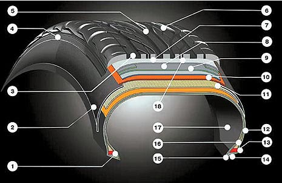
Где:
1. Бортовое проволочное кольцо
2. Боковина
3. Продольная канавка протектора
4. Плечевая часть протектора
5. Центральное ребро протектора
6. Протектор
7. Нейлоновый слой брекера
8. 2-й слой стального брекера
9. 1-й слой стального брекера
10. 2-й слой текстильного каркаса
11. 1-й слой текстильного каркаса
12. Бортовая лента
13. Пятка борта
14. Основание борта
15. Носок борта
16. Наполнительный шнур
17. Герметизирующий слой
18. Подканавочный слой протектора
Покрышка имеет следующие составные части:
- каркас - главный силовой элемент покрышки, состоящий из одного или нескольких слоев обрезиненного корда, закрепленных, как правило, на бортовых кольцах. Корд представляет собой ткань, состоящую из толстых нитей основы и тонких редких нитей по утку, изготавливаемую на основе натуральных или синтетических волокон, или тонких стальных нитей (металлокорд);
- брекер - внутренняя деталь покрышки, расположенная между каркасом и протектором и состоящая из нескольких слоев обрезиненного металлического или другого корда. Брекер предназначен для смягчения ударных нагрузок на шину, возникающих при движении автомобиля по дороге;
- протектор - наружная резиновая часть покрышки шины, как правило, с рельефным рисунком, обеспечивающая сцепление с дорогой и предохраняющая каркас от повреждений;
- боковина - слой покровной резины, расположенный на боковой стенке покрышки, предохраняющий каркас от наружных повреждений;
- борт покрышки - жесткая часть пневматической шины, обеспечивающая ее крепление на ободе колеса.
В брекере диагональных шин нити корда в смежных слоях пересекаются друг с другом под углом от 45 до 60°, а в радиальных - под углом от 45 до 65°.
Радиальные шины, в отличие от диагональных, имеют каркас с меньшим числом слоев корда, мощный брекер (чаще металлокордный), что обеспечивает им меньшую окружную деформацию при качении и меньшее проскальзывание протектора при контакте с дорогой. Радиальные шины имеют также пониженное теплообразование и меньшие потери на качение, большие сроки службы, выдерживают более высокую нагрузку и скорость.
Шины по исполнению могут быть камерные и бескамерные, а по конструкции радиальные и диагональные. В зависимости от назначения и условий эксплуатации шины подразделяются на:
При обозначении шин используются следующие размеры:
- посадочный диаметр (d) на обод колеса, обозначается в дюймах;
- ширина профиля (s) смонтированной на обод и накачанной шины без нагрузки, обозначается в миллиметрах или дюймах. Этот размер должен соответствовать посадочной ширине обода (табл. 1, 2, 3);
- серия (h) — отношение высоты профиля к его ширине в процентах. Если серия отсутствует в маркировке, значит, это отношение 80% или более;
- наружный диаметр (D) — диаметр смонтированной на обод и накачанной шины без нагрузки. Указывается в каталогах;
- высота профиля (H) — разница между наружным и посадочным диаметрами. В обозначении шин не приводится.
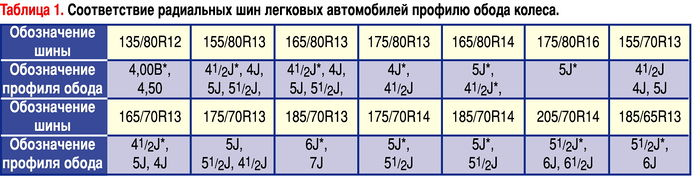
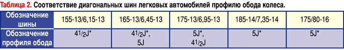
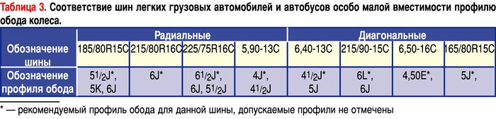
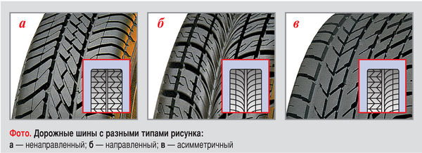
Где:
- ненаправленный рисунок (фото а) — симметричный относительно радиальной плоскости колеса, проходящей через его ось вращения. Является наиболее универсальным, поэтому большая часть шин выпускается с таким рисунком;
- направленный рисунок (фото б) — симметричный относительно плоскости, проходящей через середину протектора. Он обладает улучшенной способностью отвода воды из пятна контакта с дорогой и пониженной шумностью;
- асимметричный рисунок (фото в) — не симметричный относительно центральной плоскости вращения колеса. Его используют для реализации разных свойств в одной шине. Например, наружная сторона шины лучше работает на сухой дороге, а внутренняя — на мокрой.
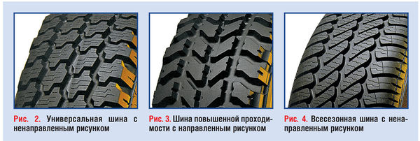
Маркировка содержит информацию о размерах, конструкции шины, индексах скорости и грузоподъемности. В соответствии с действующими стандартами обозначение размеров может быть миллиметровым, дюймовым или смешанным.
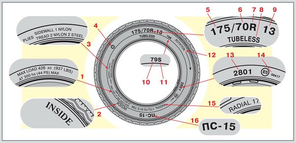
1 — максимальная нагрузка и давление (по стандарту США);
2 — обозначение внутренней стороны шины при асимметричном* рисунке протектора. Наружная сторона в этом случае обозначается „OUTSIDE";
3 — количество слоев и тип корда каркаса и брекера;
4 — товарный знак завода-изготовителя;
5 — ширина профиля;
6 — серия;
7, 15 — обозначение радиальной шины;
8 — обозначение бескамерной шины;
9 — посадочный диаметр;
10 — индекс грузоподъемности;
11 — индекс скорости;
12 — обозначение направления вращения шины на автомобиле (при направленном рисунке протектора);
13 — дата изготовления, например 28-я неделя 2001 года (до 2000 года — трехзначное число);
14 — знак официального утверждения шины на соответствие Правилу № 30 ЕЭК ООН, условный номер страны, выдавшей сертификат, и номер сертификата;
16 — наименование модели.
Примеры обозначения шин по ГОСТ 4754-97
1) 185/70R14
2) 215/90-15С
3) 5,90-13С
Цифры и буквы означают:
185; 215; 5,90 — ширина профиля в мм или дюймах;
70; 90 — серия (отношение высоты профиля к его ширине в процентах;
R — обозначение радиальной шины (в обозначении диагональной шины букву “D” не указывают);
14; 15; 13 — посадочный диаметр обода в дюймах;
С — индекс, обозначающий, что покрышка предназначена для легких грузовых автомобилей и автобусов особо малой вместимости.
В обращении встречаются шины с иными обозначениями, например:
1) 6,15-13/155-13
6,15 и 155 — ширина профиля в дюймах и миллиметрах;
13 — посадочный диаметр обода в дюймах.
Буквы R нет, значит шина диагональная. Поскольку не указано значение высоты профиля, оно превышает 80%.
2) 31х10,5R15 (для шин вседорожников, все размеры в дюймах)
31 — наружный диаметр;
10,5 — ширина профиля;
R — радиальная шина;
15 — посадочный диаметр.
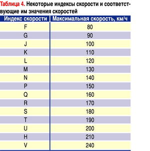
Маркировка шин отечественного производства
В соответствии с ГОСТ 4754-97 на покрышку наносятся следующие обязательные надписи:
товарный знак и (или) наименование изготовителя;
наименование страны — изготовителя на английском языке — “Made in…”;
обозначение шины;
торговая марка (модель шины);
индекс несущей способности (грузоподъемности);
индекс категории скорости (табл.4);
“Tubeless” — для бескамерных шин;
“Reinforced” — для усиленных шин;
“M+S” или “M.S” — для зимних шин;
“All seasons” — для всесезонных шин;
дату изготовления, состоящую из трех цифр, первые две обозначают неделю изготовления, последняя — год;
“PSI” — индекс давления от 20 до 85 (только для шин с индексом “С”);
“Regroovable” — в случае возможности углубления рисунка протектора методом нарезки;
знак официального утверждения “E” с указанием номеров официального утверждения и страны, выдавшей сертификат;
“ГОСТ 4754”;
национальный знак соответствия ГОСТу (допускается наносить только в сопроводительной документации);
порядковый номер шины;
знак направления вращения (в случае направленного рисунка протектора);
“TWI” — место расположения индикаторов износа;
балансировочная метка (кроме шин 6,50-16С и 215/90-15С, поставляемых в эксплуатацию);
штамп технического контроля.
На них могут быть некоторые другие обозначения:
“Тous terrain” — всесезонная;
“R+W” (Road + Winter) — дорожная + зимняя (универсальная);
“Retread” — восстановленная;
“Inside” — внутренняя сторона;
“Outside” — наружная сторона;
“Rotation” — направление вращения (для шин с направленным рисунком);
“Side facing inwards” — сторона, обращенная внутрь;
“Side facing outwards” — сторона, обращенная наружу (для асимметричных шин);
“Steel” — обозначение наличия металлокорда;
“TL” — бескамерная шина;
“ТТ” или “MIT SCHLAUCH” — камерная шина.
Желательно, чтобы все шины, установленные на автомобиль, были не только одного размера и конструкции, но и одной модели и по возможности одного производителя. Несмотря на внешнее сходство некоторых рисунков протектора, каждая модель шин обладает комплексом свойств, присущих только ей. При установке на разные оси автомобиля шин с отличающимся, хотя и очень похожим рисунком (это допускается Правилами дорожного движения), сцепные свойства неизбежно будут отличаться, что может пагубно сказаться на управляемости в критических ситуациях. В случае вынужденной установки не одинаковых шин необходимо по возможности избегать следующих сочетаний:
Особенно опасны два последних варианта, так как на влажном или обледенелом асфальте сцепление задних шин с дорогой значительно снижается, что может привести к заносу и ДТП.
Все шины, даже в пределах одного типа, различаются по химическому составу резины, внутренней конструкции и рисунку протектора. Это связано с тем, что сделать “идеальную” шину, которая бы обеспечивала максимальную реализацию характеристик автомобиля при всех дорожных условиях, невозможно. Поэтому производители выпускают шины:
Поэтому перед выбором шин необходимо определить:
При переходе на другую размерность желательно, чтобы не изменился наружный диаметр шины, который можно рассчитать по формуле:
D = 25,4d+2sh,
где d — посадочный диаметр колеса (дюймы), s — ширина профиля шины (мм), h — серия шины (отношение высоты профиля шины к ее ширине в %). Рекомендуемые варианты замены приведены в табл. 5.
Необходимо учитывать, что эксплуатация шин на предельных скоростях и нагрузке значительно снижает их ресурс.
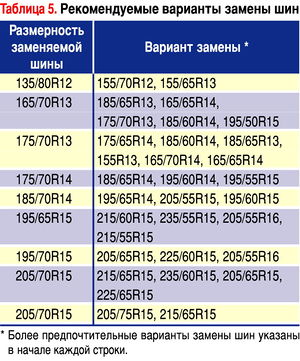
Если завод-изготовитель автомобиля позволяет варьировать размер шин в некоторых пределах, то для лета предпочтительнее более широкие покрышки. На них машина чуть лучше тормозит и меньше буксует при интенсивном разгоне. Но вместе с тем хуже управляется в поворотах малого радиуса - шине приходится проскальзывать из-за того, что противоположные стороны протектора проходят разные пути, и чем шире шина, тем больше разница проскальзывания. К тому же широкие шины всплывают в лужах при меньшей скорости, чем узкие.
От серии или высоты профиля шины напрямую зависит управляемость и устойчивость автомобиля, и плавность хода. Высокая боковина лучше противостоит ухабам, но в поворотах такая шина будет подламываться, опаздывая с реакцией, и изменять траекторию. Зато низкопрофильная шина - жесткая и не терпит плохих дорог.
Отдельная категория шин - «M+S» (грязь и снег). Такие шины обладают посредственными характеристиками на асфальте, но имеют преимущества на грунтовках и заснеженных дорогах. Впрочем на последних ведут себя хуже настоящих зимних, обозначенных дополнительно значком с трехглавой горной вершиной и снежинкой. Впрочем, значка может и не быть.
Еще одна «полувездеходная» категория – All season – всезсезонные шины. В какой-то степени они близки к шинам типа «m+s», поскольку допускают и летнюю, и зимнюю эксплуатацию. Подобная универсальность допустима в теплых регионах, где зима короткая и не холодная, а лето не очень жаркое. Универсальные шины заметно отстают от летних шин летом и от зимних – зимой.
Шины типа Run-Flat (не боящиеся проколов, благодаря усиленным боковинам) имеют свою отличительную маркировку, которая приведена в таблице:
Обозначения шин категории Run-Flat
|
Производитель шин |
маркировка |
Производитель шин |
маркировка |
|
RFT (Run-Flat Tyre) |
ZP (Zero Pressure) | ||
|
SSR (Self Supporting Run-Flat) |
EUFORI@ или RF | ||
|
EMT (Extended Mobility Technology) или RunOnFlat |
Run Flat или RF | ||
|
RF |
RF |
Другие маркировки, которые можно встретить на шинах, приведены в таблице:.
|
Маркировка |
Что означает |
Примечание |
|
All season или Tous terrain |
Всесезонная |
|
|
R+W (Road+winter) |
Дорожная +зимняя (всесезонная) |
|
|
M+S, M&S или M(.)S (mud+ snow) |
Грязь и снег |
|
|
XL (extra load) |
Повышенной грузоподъемности |
Реальная грузоподъемность шины определяется индексом грузоподъемности |
|
R или Radial |
Радиальная конструкция шины |
|
|
Reinforced |
Усиленная |
|
|
Retread |
Восстановленная |
|
|
Regroovable |
Возможна нарезка/ углубление канавок |
|
|
Rotation (употребляется вместе со стрелкой) |
Направление вращения шины |
Только для шин с направленным типом протектора |
|
Inside или Side facing inwards |
Внутренняя сторона боковины |
Только для шин с асимметричным типом протектора |
|
Outside или Side facing outwards |
Внешняя сторона боковины |
Только для шин с асимметричным типом протектора |
|
С (commercial) |
Для легких грузовиков и микроавтобусов |
Обычно расположена в конце маркировки размерности шины |
|
P (passenger) |
Легковая |
На шинах американского производства. Может быть расположен перед маркировкой размерности шины. |
|
LT (light truck) |
Для легких грузовиков и автобусов |
На шинах американского производства. Может быть расположен перед маркировкой размерности шины. |
|
SUV |
Для вседорожников |
|
|
Steel или Steel belted |
Металлокордный брекер |
|
|
Tubeless или TL |
Бескамерная |
|
|
Tube type или TT |
С камерой |
|
|
TWI (Tread wear indication) |
Индикатор износа глубины протектора |
|
|
Буква «Е» в кружочке с цифровым индексом |
Подтверждение сертификации типа шины на соответствие Правилу № 30 ЕЭК ООН. |
Цифровой индекс в кружочке – номер (код) страны, проводившей сертификацию, вне круга – номер сертификата. |
|
Maximum load … |
Максимально допустимая нагрузка на шину по стандарту США |
Лучше ориентироваться на индекс грузоподъемности |
|
Maximum Pressure … |
Максимально допустимое давление в шине по стандарту США |
|
|
ETRO |
Европейская техническая организация по шинам и дискам |
|
|
ECE |
Европейская комиссия по экономике |
|
|
DOT |
Министерство транспорта США |
|
|
FMVSS |
Федеральный стандарт безопасности транспортных средств |
Для гурманов
Такие предпочитают подбирать комплект шин из одной партии, стараясь избегать даже минимальных отклонений в свойствах. Тогда нужно обратить внимание на маркировку типа: «DOT GU N4 FRVX 1908». На шинах Michelin все вместе это называется номером сертификата производителя в соответствии с DOT, и означает следующее:
Шины разных партий если и различаются, то не настолько, чтобы это заметил потребитель. Разница, как правило, мизерная.
Приоткрою маленькую тайну, которую многие шинники стараются по понятным причинам не афишировать. Производители автомобилей для шин первичной комплектации выдвигают свои требования. Mercedes, например, делает упор на комфорт, BMW – на управляемость – в итоге баланс свойств шин слегка меняется. При этом название и рисунок протектора остаются нетронутыми, и на вид их различить невозможно. Потому на них наносят специальные метки, которые приведены в таблице:
Дополнительные маркировки на шинах, поставляемых на первичную комплектацию
Ставятся по требованию автопроизводителей:
|
Дополнительная маркировка |
автопроизводитель |
|
* |
BMW |
|
A |
Renault Espace 4 |
|
B |
Audi, Bentley |
|
C1 |
Chrysler Viper GTS (1999-2000) |
|
G1 |
Автомобили комплектации G1 |
|
J |
Jaguar |
|
K1 |
Ferrari |
|
M0 |
Mercedes |
|
M3 |
BMW M3 |
|
N0, N1, N2, N3 |
Porsche |
|
R01 |
Audi quattro |
Примечание: Michelin рекомендует:
1. На автомобилях марки, выделенной жирным шрифтом недопустимо использовать шины без соответствующей маркировки.
2. Шины, выделенные жирным шрифтом недопустимо использовать на автомобилях другого производителя.
Шины без подобной маркировки - среднестатистические, и идут в продажу либо на комплектацию автомобилей без особых требований к покрышкам.
Если вы подбираете одну шину на BMW или Porsche, лучше уточнить, есть ли на ней специальная маркировка. Если есть – ищите точно такую же, заказывая через дилера автомобиля. Понятно, что такая покрышка обойдется дороже обычной магазинной. Но только тогда можно быть уверенным, что в экстренной ситуации автомобиль не взбрыкнет «среднестатистической покрышкой». Если такую найти невозможно, придется покупать в обычном шинном магазине все четыре.
О грыжестойкости
Увеличение индексов скорости и грузоподъемности не означает, что шина будет меньше бояться пробоев и притирания к бордюрам. Но небольшие преимущества все же есть. Более скоростные шины конструктивно прочнее в радиальном направлении. Зачастую благодаря усиливающей прокладке между брекером и каркасом. Такие шины чуть менее уязвимы к ударам но, как правило, более жесткие и шумные.
Шины с более высоким индексом грузоподъемности отличаются не только дополнительной подложкой, но и усиленными боковинами. Они действительно более прочные. У шин для автомобилей категории SUV усиливают подкладками еще и плечи, так что если предстоит ездить по разбитым дорогам, можно подобрать такие, подходящие по размерности и скоростным возможностям. Кстати, некоторые импортные автомобили для российского рынка производители комплектуют шинами заведомо большей грузоподъемности. Имейте ввиду, что они тяжелее, менее комфортны, и увеличивают расход топлива. К тому же, жесткие шины плохо гасят энергию ударов, потому больше страдают подвеска и кузов. Вариант некоторого увеличения «грыжестойкости» – увеличение давления выше рекомендованного на 0,3-0,5 бар. Но не забудем, что при этом ухудшится сцепление колес с дорогой и плавность хода.
Тату на плечах
1. В последнее время боковины шин некоторых производителей украсились картинками примерно следующего вида.
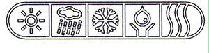
Слева направо это означает: лето, дождь, снег, экономия топлива, уверенное прохождение поворотов. Другие, если и вводят аналогичные значки, стараются держать их на сайте компании, ведь эта информация нужна лишь при выборе шин.
2. «Зеленые» шины отличаются уменьшенным расходом топлива и пониженным уровнем шума. Насколько – знает только сам производитель.
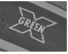
такой значок применяет Michelin. А Nokian и Pirelli – рельефные листочки
3. Трехглавая снежная вершина со снежинкой говорит о том, что шины созданы для суровых зимних условий. Применяется как дополнительная маркировка к шинам типа «M+S»
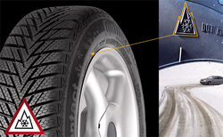
4. Самый удобный индикатор износа (Nokian) – достаточно беглого взгляда на протектор, чтобы узнать, какова его остаточная глубина (цифры «выдавлены» на определенную глубину) и сохранили ли шины способность оставаться зимними (снежинка сотрется с протектора, когда глубина его канавок останется меньше 4 мм):
5. Еще одна хитрость Nokian – маркировка позиционирования колес на автомобиле при сезонной смене шин.
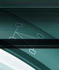
6. Толкование круглых и треугольных цветных меток на боковинах шин не регламентировано ни одним международным или европейским документом. К примеру Bridgestone, Yokohama, Kumho, маркируют продукцию в соответствии с требованиями заводов-изготовителей автомобилей. Поэтому цветные метки можно встретить на шинах, предназначенных для первичной комплектации.
Наиболее распространенное толкование желтых меток – легчайшая часть покрышки. Красная указывает место максимальной силовой неоднородности либо наиболее тяжелой части шины. Белая метка любой формы – фрагмент штампа ОТК.
Цветные полоски в канавках протектора – это, как правило, логистические сигналы, упрощающие жизнь складским работникам. Чтобы знать наверняка, что означает каждая конкретная цветная полоска или метка любой конфигурации, придется обратиться к производителю шины.